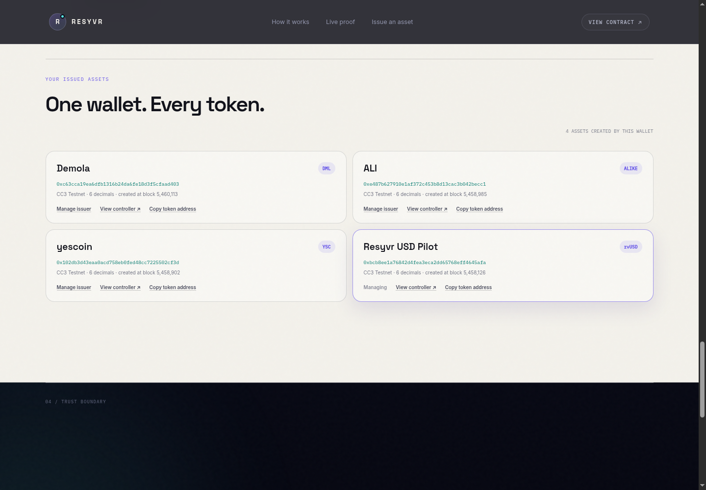

Hidden reserves
Token holders cannot independently confirm that the claimed backing was actually locked.
01 / 08
Judge evidence ↗Cross-chain infrastructure for issuing and redeeming assets against cryptographically verified reserves.
V2 live testnet lifecycle · September 2026
Token holders cannot independently confirm that the claimed backing was actually locked.
A cross-chain transaction alone does not prove the right vault, asset, recipient or amount.
Many prototypes demonstrate issuance but never prove reserve payout and token burning.
Reserve enters a canonical Sepolia vault.
Attestcoin verifies the source event.
Creditcoin creates the exact proven amount.
Payout proof authorizes the final burn.
Resyvr turns cross-chain evidence into enforceable token-supply rules.
Locks test USDC and emits uniquely identified deposit and payout events.
Proves the transaction, receipt, event fields and attested block continuity.
Checks provenance and replay identities, then mints, escrows or burns.
An issuer creates a branded, redeemable ERC-20 system, returns later to mint more of the same asset, and manages every token from one portfolio.

Holder escrows tokens on Creditcoin.
Vault sends the exact reserve amount to the named recipient.
Attestcoin proves the successful Sepolia payout.
Creditcoin finalizes redemption and destroys the escrowed supply.
0x52a6…00c70x7d1d…226b0x0b9f…45e40xe006…60b0Canonical vaults, isolated asset systems, repeat minting and complete redemption.
Every address, transaction, proof result and final accounting state is public.
Test assets, attestation delay, issuer liveness, and an activation stake that is explicitly not insurance.